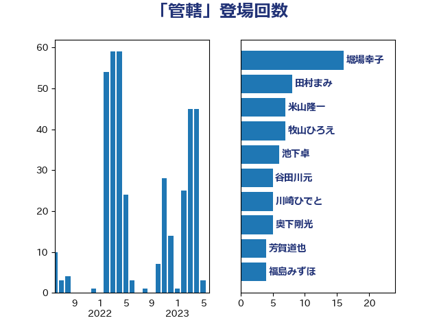

単語「管轄」

| 鷲尾英一郎 | 自由民主党 | 9 回 |
| 堀場幸子 | 日本維新の会 | 8 回 |
| 岸信夫 | 自由民主党 | 7 回 |
| 米山隆一 | 立憲民主党 | 7 回 |
| 谷田川元 | 立憲民主党 | 7 回 |
| 田村まみ | 国民民主党 | 6 回 |
| 菅直人 | 立憲民主党 | 6 回 |
| 三宅伸吾 | 自由民主党 | 5 回 |
| 伊藤孝恵 | 国民民主党 | 5 回 |
| 伊藤岳 | 日本共産党 | 5 回 |
| 平井卓也 | 自由民主党 | 5 回 |
| 斎藤洋明 | 自由民主党 | 5 回 |
| 梅村聡 | 日本維新の会 | 5 回 |
| 井上哲士 | 日本共産党 | 4 回 |
| 前原誠司 | 国民民主党 | 4 回 |
| 太栄志 | 立憲民主党 | 4 回 |
| 奥下剛光 | 日本維新の会 | 4 回 |
| 牧山ひろえ | 立憲民主党 | 4 回 |
| 田村智子 | 日本共産党 | 4 回 |
| 芳賀道也 | 国民民主党 | 4 回 |
| 塩田博昭 | 公明党 | 3 回 |
| 小宮山泰子 | 立憲民主党 | 3 回 |
| 山井和則 | 立憲民主党 | 3 回 |
| 山田美樹 | 自由民主党 | 3 回 |
| 川崎ひでと | 自由民主党 | 3 回 |
| 平山佐知子 | 無所属 | 3 回 |
| 森屋隆 | 立憲民主党 | 3 回 |
| 森山浩行 | 立憲民主党 | 3 回 |
| 武田良太 | 自由民主党 | 3 回 |
| 浜口誠 | 国民民主党 | 3 回 |
| 浜田聡 | NHK党 | 3 回 |
| 清水貴之 | 日本維新の会 | 3 回 |
| 福島みずほ | 社会民主党 | 3 回 |
| 藤田文武 | 日本維新の会 | 3 回 |
| 上川陽子 | 自由民主党 | 2 回 |
| 中島克仁 | 立憲民主党 | 2 回 |
| 中川正春 | 立憲民主党 | 2 回 |
| 伊波洋一 | 無所属 | 2 回 |
| 古賀之士 | 立憲民主党 | 2 回 |
| 塩村あやか | 立憲民主党 | 2 回 |
| 大野泰正 | 自由民主党 | 2 回 |
| 守島正 | 日本維新の会 | 2 回 |
| 山崎誠 | 立憲民主党 | 2 回 |
| 岸真紀子 | 立憲民主党 | 2 回 |
| 平沼正二郎 | 自由民主党 | 2 回 |
| 斎藤嘉隆 | 立憲民主党 | 2 回 |
| 杉久武 | 公明党 | 2 回 |
| 武村展英 | 自由民主党 | 2 回 |
| 池下卓 | 日本維新の会 | 2 回 |
| 津島淳 | 自由民主党 | 2 回 |
| 渡辺周 | 立憲民主党 | 2 回 |
| 田島麻衣子 | 立憲民主党 | 2 回 |
| 畦元将吾 | 自由民主党 | 2 回 |
| 美延映夫 | 日本維新の会 | 2 回 |
| 落合貴之 | 立憲民主党 | 2 回 |
| 藤木眞也 | 自由民主党 | 2 回 |
| 赤羽一嘉 | 公明党 | 2 回 |
| 近藤和也 | 立憲民主党 | 2 回 |
| 鈴木敦 | 国民民主党 | 2 回 |
| こやり隆史 | 自由民主党 | 1 回 |
| 一谷勇一郎 | 日本維新の会 | 1 回 |
| 三木亨 | 自由民主党 | 1 回 |
| 上野賢一郎 | 自由民主党 | 1 回 |
| 中川郁子 | 自由民主党 | 1 回 |
| 中西祐介 | 自由民主党 | 1 回 |
| 丹羽秀樹 | 自由民主党 | 1 回 |
| 井上英孝 | 日本維新の会 | 1 回 |
| 井林辰憲 | 自由民主党 | 1 回 |
| 伴野豊 | 立憲民主党 | 1 回 |
| 佐藤英道 | 公明党 | 1 回 |
| 倉林明子 | 日本共産党 | 1 回 |
| 和田有一朗 | 日本維新の会 | 1 回 |
| 國重徹 | 公明党 | 1 回 |
| 土田慎 | 自由民主党 | 1 回 |
| 坂本哲志 | 自由民主党 | 1 回 |
| 堤かなめ | 立憲民主党 | 1 回 |
| 宮本徹 | 日本共産党 | 1 回 |
| 小田原潔 | 自由民主党 | 1 回 |
| 山下芳生 | 日本共産党 | 1 回 |
| 山崎正恭 | 公明党 | 1 回 |
| 山本太郎 | れいわ新選組 | 1 回 |
| 山添拓 | 日本共産党 | 1 回 |
| 岡本あき子 | 立憲民主党 | 1 回 |
| 川田龍平 | 立憲民主党 | 1 回 |
| 後藤茂之 | 自由民主党 | 1 回 |
| 斎藤アレックス | 国民民主党 | 1 回 |
| 朝日健太郎 | 自由民主党 | 1 回 |
| 木村英子 | れいわ新選組 | 1 回 |
| 末松信介 | 自由民主党 | 1 回 |
| 松沢成文 | 日本維新の会 | 1 回 |
| 林芳正 | 自由民主党 | 1 回 |
| 柳ヶ瀬裕文 | 日本維新の会 | 1 回 |
| 柳本顕 | 自由民主党 | 1 回 |
| 梅谷守 | 立憲民主党 | 1 回 |
| 森田俊和 | 立憲民主党 | 1 回 |
| 横沢高徳 | 立憲民主党 | 1 回 |
| 橋本聖子 | 無所属 | 1 回 |
| 武見敬三 | 自由民主党 | 1 回 |
| 池畑浩太朗 | 日本維新の会 | 1 回 |
| 沢田良 | 日本維新の会 | 1 回 |
| 浅田均 | 日本維新の会 | 1 回 |
| 猪口邦子 | 自由民主党 | 1 回 |
| 玄葉光一郎 | 立憲民主党 | 1 回 |
| 田中健 | 国民民主党 | 1 回 |
| 田村貴昭 | 日本共産党 | 1 回 |
| 白石洋一 | 立憲民主党 | 1 回 |
| 矢倉克夫 | 公明党 | 1 回 |
| 石田昌宏 | 自由民主党 | 1 回 |
| 磯崎仁彦 | 自由民主党 | 1 回 |
| 神谷裕 | 立憲民主党 | 1 回 |
| 笠浩史 | 無所属 | 1 回 |
| 篠原豪 | 立憲民主党 | 1 回 |
| 羽生田俊 | 自由民主党 | 1 回 |
| 舞立昇治 | 自由民主党 | 1 回 |
| 舟山康江 | 国民民主党 | 1 回 |
| 若宮健嗣 | 自由民主党 | 1 回 |
| 茂木敏充 | 自由民主党 | 1 回 |
| 菅家一郎 | 自由民主党 | 1 回 |
| 萩生田光一 | 自由民主党 | 1 回 |
| 足立敏之 | 自由民主党 | 1 回 |
| 重徳和彦 | 立憲民主党 | 1 回 |
| 阿達雅志 | 自由民主党 | 1 回 |
| 阿部司 | 日本維新の会 | 1 回 |
| 阿部弘樹 | 日本維新の会 | 1 回 |
| 青山大人 | 立憲民主党 | 1 回 |
| 高木かおり | 日本維新の会 | 1 回 |
| 高良鉄美 | 無所属 | 1 回 |
| 麻生太郎 | 自由民主党 | 1 回 |